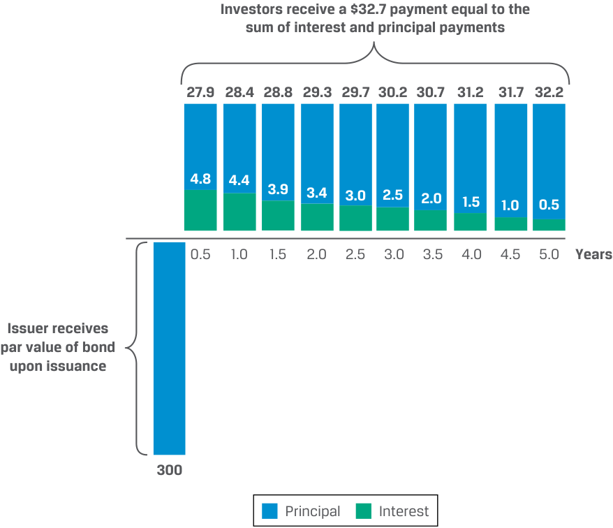
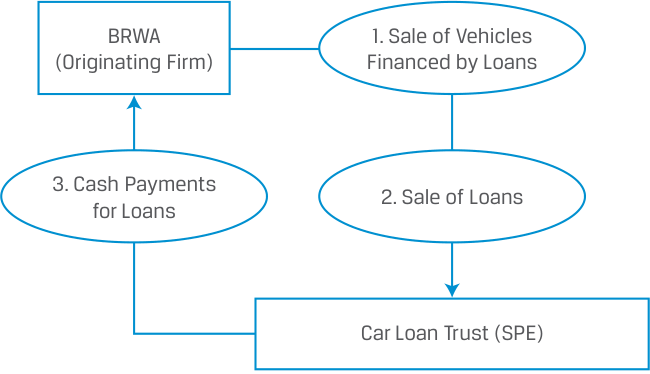
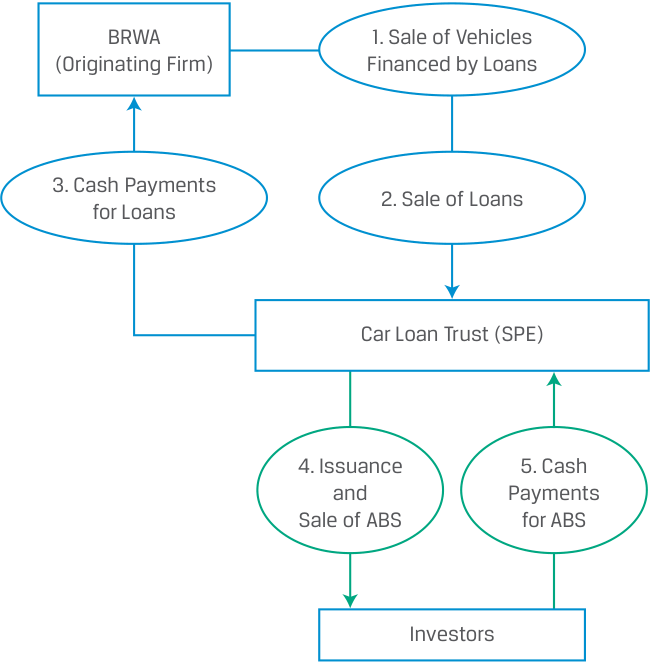
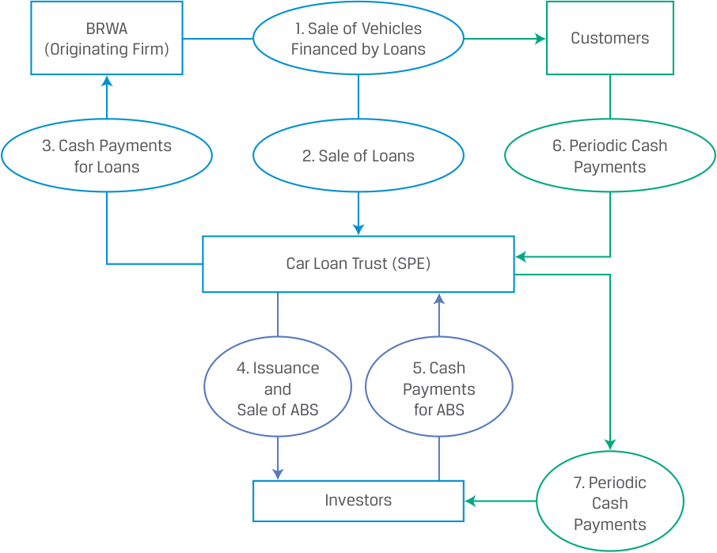
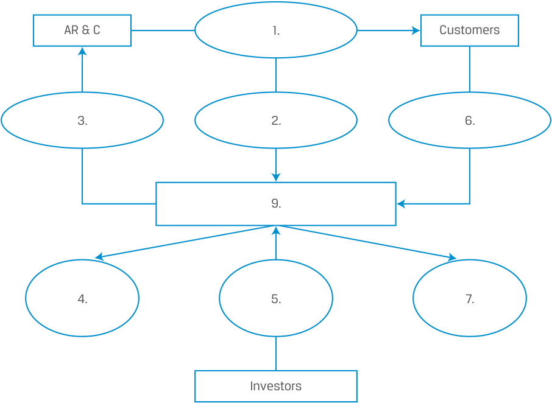
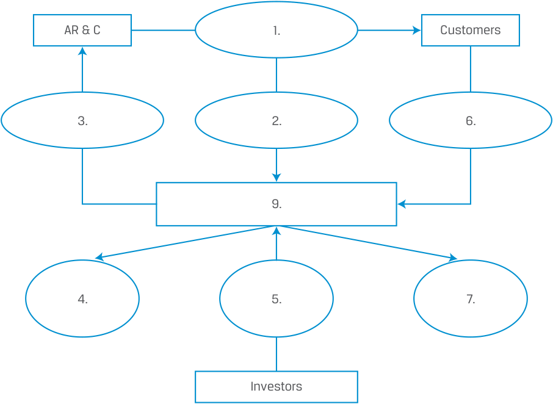
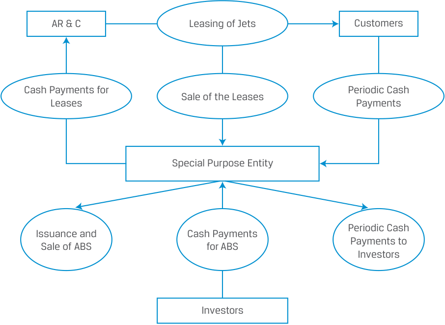

Learning Module 17 Fixed-Income Securitization - Part 2: The Securitization Process
Volume 6: Fixed Income
Learning Module 17 Fixed-Income Securitization
Part 2/2: The Securitization Process (PDF Pages 462–474)
Tập 6: Chứng Khoán Thu Nhập Cố Định (Fixed Income)
Học phần 17: Chứng Khoán Hóa Thu Nhập Cố Định (Fixed-Income Securitization)
Phần 2/2: Quy Trình Chứng Khoán Hóa (Trang PDF 462–474)
anticipated liability payout dates, and increase diversity in its asset pool while maintaining the option to adjust holdings quickly and cost-effectively.
các ngày chi trả nghĩa vụ nợ dự kiến, và tăng tính đa dạng hóa trong danh mục tài sản của mình trong khi vẫn duy trì quyền chọn điều chỉnh danh mục nắm giữ một cách nhanh chóng và tiết kiệm chi phí.
- Determine if the following events associated with an ABS are more likely to result in a benefit or a risk and identify for whom (issuers, investors, financial markets):
- Xác định xem các sự kiện sau đây liên quan đến một ABS nhiều khả năng dẫn đến một lợi ích (benefit) hay một rủi ro (risk) và xác định đối tượng chịu tác động (tổ chức phát hành, nhà đầu tư, thị trường tài chính):
| Event | Benefit or Risk | For Whom |
|---|---|---|
| A. Change in the timing of the cash flows |
||
| l B. Change in the credit worthiness of the associ- ated ABS loans |
||
| C. Sellingilliquid assets | ||
| D. Securitizing assets |
| Sự kiện (Event) | Lợi ích hay Rủi ro (Benefit or Risk) | Đối với ai (For Whom) |
|---|---|---|
| A. Thay đổi về thời điểm nhận dòng tiền (Change in the timing of the cash flows) | ||
| B. Thay đổi về mức độ tín nhiệm của các khoản vay cơ sở gắn với ABS (Change in the credit worthiness of the associated ABS loans) | ||
| C. Bán các tài sản kém thanh khoản (Selling illiquid assets) | ||
| D. Chứng khoán hóa tài sản (Securitizing assets) |
Solution
Lời giải (Solution)
| Event | Benefit or Risk | For Whom |
|---|---|---|
| A. Change in the timing of the cash flows |
Risk | Investors – Prepayment risk, the uncertainty that cash flows will differ from the schedule set forth in the initial loan agreement, can result either when interest rates decline and borrowers pay off part or all of their loans early or when borrowers experience financial duress and slow down their loanpayments. |
| B. Change in the credit worthiness of the associ- ated ABS loans |
Risk | Investors – If the borrowers default on their loans, then the SPE may not be able to make cash payments to the security holders. On the other hand, if the borrow- ers’ credit worthiness improves, there is no direct benefit to the investors. |
| C. Sellingilliquid assets | Benefit | Issuer |
| D. Securitizing assets | i Benefit |
Issuer, Investors Financial Markets |
| Sự kiện (Event) | Lợi ích hay Rủi ro (Benefit or Risk) | Đối với ai (For Whom) |
|---|---|---|
| A. Thay đổi về thời điểm nhận dòng tiền (Change in the timing of the cash flows) | Rủi ro (Risk) | Nhà đầu tư (Investors) – Rủi ro trả nợ trước hạn (prepayment risk), tức sự bất định về việc dòng tiền sẽ khác biệt so với lịch trình đã quy định trong hợp đồng vay ban đầu, có thể xảy ra khi lãi suất giảm và người đi vay trả hết một phần hoặc toàn bộ khoản vay sớm hơn hạn, hoặc khi người đi vay gặp khó khăn tài chính và làm chậm tiến độ thanh toán khoản vay của họ. |
| B. Thay đổi về mức độ tín nhiệm của các khoản vay cơ sở gắn với ABS (Change in the credit worthiness of the associated ABS loans) | Rủi ro (Risk) | Nhà đầu tư (Investors) – Nếu những người đi vay vỡ nợ đối với khoản vay của họ, thì SPE có thể không đủ khả năng thực hiện các khoản thanh toán tiền mặt cho những người nắm giữ chứng khoán. Mặt khác, nếu mức độ tín nhiệm của người đi vay được cải thiện, cũng không có lợi ích trực tiếp nào tăng thêm cho các nhà đầu tư. |
| C. Bán các tài sản kém thanh khoản (Selling illiquid assets) | Lợi ích (Benefit) | Tổ chức phát hành (Issuer) |
| D. Chứng khoán hóa tài sản (Securitizing assets) | Lợi ích (Benefit) | Tổ chức phát hành, Nhà đầu tư, Thị trường Tài chính (Issuer, Investors, Financial Markets) |
3
3
THE SECURITIZATION PROCESS
QUY TRÌNH CHỨNG KHOÁN HÓA (THE SECURITIZATION PROCESS)
describe securitization, including the parties and the roles they play
Mục tiêu học tập: Mô tả quy trình chứng khoán hóa, bao gồm các bên tham gia và vai trò của họ.
Securitization requires that several legal and regulatory conditions are satisfied and involves multiple parties to facilitate the transaction and ensure that these conditions are met. This section describes a typical securitization process, the parties, and their roles.
Chứng khoán hóa đòi hỏi phải thỏa mãn một số điều kiện pháp lý và quy định quản lý, đồng thời có sự tham gia của nhiều bên để hỗ trợ giao dịch và đảm bảo rằng các điều kiện này được đáp ứng. Phần này mô tả một quy trình chứng khoán hóa điển hình, các bên tham gia và vai trò của họ.
An Example of a Securitization
Một Ví dụ về Chứng khoán hóa (An Example of a Securitization)
Let’s revisit Bright Wheel Automotive (BRWA), the hypothetical car manufacturer introduced earlier. BRWA’s financing company subsidiary provides loans to BRWA customers with the vehicles serving as collateral. These fixed-rate loans represent an asset to the company with maturities averaging four years. They are fully amortizing with the principal repaid in 48 monthly payments (12 months × 4 years). The borrowers make equal payments each month consisting of interest payment and principal repayment, as shown in Exhibit 5.
Hãy cùng xem lại Bright Wheel Automotive (BRWA), nhà sản xuất ô tô giả định đã được giới thiệu trước đó. Công ty con tài chính của BRWA cung cấp các khoản vay cho khách hàng của BRWA với chính những chiếc xe đóng vai trò là tài sản thế chấp (collateral). Các khoản vay lãi suất cố định này đại diện cho một tài sản của công ty với kỳ hạn trung bình là 4 năm. Chúng là các khoản vay trả góp khấu hao gốc đều toàn phần (fully amortizing) với nợ gốc được hoàn trả trong 48 kỳ thanh toán hàng tháng (12 tháng × 4 năm). Người đi vay thực hiện các khoản thanh toán bằng nhau mỗi tháng bao gồm phần thanh toán tiền lãi và phần hoàn trả nợ gốc, như được thể hiện trong Bảng minh họa 5 (Exhibit 5).
Exhibit 5: Bright Wheel Automotive Securitization
Bảng minh họa 5: Giao dịch Chứng khoán hóa của Bright Wheel Automotive (Exhibit 5: Bright Wheel Automotive Securitization)

Chú thích hình ảnh: - Khi phát hành (Năm 0): Tổ chức phát hành nhận mệnh giá trái phiếu khi phát hành (Issuer receives par value of bond upon issuance): 300. - Qua các năm (0,5 đến 5,0 năm): Nhà đầu tư nhận khoản thanh toán \$32,7 bằng tổng tiền lãi và tiền gốc (Investors receive a \$32.7 payment equal to the sum of interest and principal payments), trong đó phần Gốc (Principal) tăng dần từ 27,9 lên 32,2 và phần Lãi (Interest) giảm dần từ 4,8 xuống 0,5.
BRWA’s financing subsidiary decides whether to extend credit to customers, and it also services the loans. Loan servicing refers to administering any aspect of a loan, including collecting payments from borrowers, notifying borrowers who may be delinquent, and recovering and disposing of a vehicle if the borrower does not make the payments as scheduled. If a customer defaults, BRWA can seize the car and sell it to recoup the remaining principal on the loan. The role of the servicer can vary: In this example, the issuer continues to service the loan, but at other times, the servicing may be provided by another entity.
Công ty con tài chính của BRWA quyết định việc có cấp tín dụng cho khách hàng hay không, và họ cũng trực tiếp thực hiện dịch vụ quản lý thu hộ các khoản vay (services the loans). Dịch vụ quản lý khoản vay (Loan servicing) đề cập đến việc quản trị mọi khía cạnh của một khoản vay, bao gồm thu tiền thanh toán từ người đi vay, thông báo cho những người đi vay có thể bị quá hạn thanh toán (delinquent), cũng như thu hồi và thanh lý chiếc xe nếu người đi vay không thực hiện thanh toán theo đúng lịch trình. Nếu một khách hàng vỡ nợ, BRWA có thể tịch thu chiếc xe và bán nó đi để thu hồi phần nợ gốc còn lại của khoản vay. Vai trò của tổ chức quản lý dịch vụ thu hộ (servicer) có thể khác nhau: Trong ví dụ này, tổ chức phát hành tiếp tục quản lý dịch vụ thu hộ khoản vay, nhưng trong những trường hợp khác, dịch vụ thu hộ có thể được cung cấp bởi một pháp nhân khác.
The following is an illustration of how these loans can be securitized. In this simplified example, the costs and fees associated with the securitization are ignored. Exhibit 6 shows a summary of the terms for a securitization transaction where BRWA sold car loans to a hypothetical SPE named Car Loan Trust (CLT), which then uses the loans as collateral for ABS it issues.
Dưới đây là minh họa về cách thức các khoản vay này có thể được chứng khoán hóa. Trong ví dụ giản lược này, các chi phí và lệ phí liên quan đến giao dịch chứng khoán hóa được bỏ qua. Bảng minh họa 6 (Exhibit 6) trình bày tóm tắt các điều khoản cho một giao dịch chứng khoán hóa, trong đó BRWA bán các khoản vay mua ô tô cho một SPE giả định có tên là Car Loan Trust (CLT), và sau đó CLT sử dụng các khoản vay này làm tài sản thế chấp cho các chứng khoán ABS mà nó phát hành.
Exhibit 6: Notes Issued by Car Loan Trust Collateralized by Car Loans – Brief Summary of Terms
Bảng minh họa 6: Kỳ phiếu Phát hành bởi Car Loan Trust Đảm bảo bằng Khoản vay Mua ô tô – Tóm tắt Ngắn gọn các Điều khoản (Exhibit 6: Notes Issued by Car Loan Trust Collateralized by Car Loans – Brief Summary of Terms)
| Four- | Year Asset-Backed Notes — Car Loan Trust |
|---|---|
| Issuer: | Car Loan Trust (CLT), a special purpose entity. |
| Underlying Assets/ Collateral: |
Portfolio of loans by which new cars and vehicles are financed. |
| Description: | Car finance receivables originated by Bright Wheel Automotive (BRWA), sold by BRWA to CLT, purchased by CLT, and fully transferred from BRWA to CLT. There are 45,000 loans in the outstanding pool, with an aver- age balance of EUR22,222. |
| Outstanding Principal Balance of the Pool: |
EUR1,000 million |
| Settlement Date: | [T + 3 Business Days] |
| Maturity Date: | [Four Years from Settlement Date] |
| Security: | The Notes are secured obligations of CLT. |
| Business Days: | Frankfurt. |
| Kỳ phiếu Đảm bảo bằng Tài sản Kỳ hạn 4 Năm — Car Loan Trust (Four-Year Asset-Backed Notes — Car Loan Trust) | |
|---|---|
| Tổ chức phát hành (Issuer): | Car Loan Trust (CLT), một pháp nhân có mục đích đặc biệt (special purpose entity). |
| Tài sản cơ sở / Tài sản thế chấp (Underlying Assets / Collateral): | Danh mục các khoản vay tài trợ mua xe ô tô và phương tiện giao thông mới. |
| Mô tả (Description): | Các khoản phải thu tài trợ mua ô tô được khởi tạo bởi Bright Wheel Automotive (BRWA), được BRWA bán cho CLT, được CLT mua lại và chuyển giao toàn bộ từ BRWA sang CLT. Có 45.000 khoản vay trong danh mục đang lưu hành, với số dư trung bình là 22.222 EUR. |
| Số dư Nợ gốc Đang lưu hành của Danh mục (Outstanding Principal Balance of the Pool): | 1.000 triệu EUR |
| Ngày thanh toán giao dịch (Settlement Date): | [T + 3 Ngày làm việc (Business Days)] |
| Ngày đáo hạn (Maturity Date): | [Bốn năm kể từ Ngày thanh toán giao dịch] |
| Bảo đảm (Security): | Các Kỳ phiếu là nghĩa vụ nợ có bảo đảm (secured obligations) của CLT. |
| Ngày làm việc (Business Days): | Frankfurt. |
Assume that BRWA wants to raise EUR1,000 million and faces two choices. One is to issue a four-year corporate bond; the other is to issue an ABS backed by the car loans. BRWA seeks to achieve the lowest possible interest rate relative to its benchmark interest rate, where the difference is the credit spread.
Giả sử BRWA muốn huy động 1.000 triệu EUR và đứng trước hai lựa chọn. Một là phát hành trái phiếu doanh nghiệp kỳ hạn 4 năm; hai là phát hành một ABS được đảm bảo bằng các khoản vay mua ô tô. BRWA tìm cách đạt được mức lãi suất thấp nhất có thể so với lãi suất chuẩn (benchmark interest rate) của mình, trong đó phần chênh lệch chính là chênh lệch tín dụng (credit spread).
Unlike banks and finance companies, car manufacturers are more capital-intensive. Tying up capital on their balance sheet to finance car purchases may be a suboptimal use of their capital. Selling off loans frees up capital and recognizes profits that can finance the core business.
Không giống như các ngân hàng và công ty tài chính, các nhà sản xuất ô tô là ngành thâm dụng vốn (capital-intensive) hơn. Việc giam vốn trên bảng cân đối kế toán để tài trợ cho khách hàng mua xe có thể là cách sử dụng vốn chưa tối ưu. Việc bán đứt các khoản vay giúp giải phóng vốn và ghi nhận lợi nhuận để có thể tài trợ cho hoạt động kinh doanh cốt lõi.
First, BRWA sets up a separate legal entity called Car Loan Trust (CLT), a special purpose entity (SPE) , sometimes also called a special purpose vehicle (SPV) or a special purpose company, to which it sells the EUR1,000 million worth of car loans. CLT, a legally independent and bankruptcy-remote entity from BRWA, acquires these loans from BRWA and becomes the ultimate owner of the loans. The separate legal entity structure ensures that if BRWA, the originator of the loans, files for bankruptcy, the loans backing the ABS that are issued by BRWA are secure within CLT, the SPE, and BRWA’s creditors cannot have any claim on them. Creating the required separate and bankruptcy-remote legal structures for the SPE and fully transferring the loans from the issuer to the SPE can be a complicated process that varies across jurisdictions.
Trước tiên, BRWA thành lập một pháp nhân độc lập có tên là Car Loan Trust (CLT), một pháp nhân có mục đích đặc biệt (Special Purpose Entity – SPE), đôi khi còn được gọi là tổ chức có mục đích đặc biệt (Special Purpose Vehicle – SPV) hoặc công ty có mục đích đặc biệt (special purpose company), để bán số khoản vay mua ô tô trị giá 1.000 triệu EUR cho pháp nhân này. CLT, một pháp nhân độc lập về mặt pháp lý và tách biệt rủi ro phá sản (bankruptcy-remote entity) khỏi BRWA, mua lại các khoản vay này từ BRWA và trở thành chủ sở hữu tối hậu của các khoản vay đó. Cấu trúc pháp nhân độc lập đảm bảo rằng nếu BRWA, tổ chức khởi tạo (originator) các khoản vay, nộp đơn xin phá sản, thì các khoản vay đảm bảo cho ABS đã được chuyển giao từ BRWA vẫn được an toàn bên trong CLT (tức SPE), và các chủ nợ của BRWA không thể có bất kỳ quyền đòi nợ nào đối với những khoản vay đó. Việc tạo lập các cấu trúc pháp lý độc lập và tách biệt rủi ro phá sản theo yêu cầu cho SPE cũng như chuyển giao toàn bộ các khoản vay từ tổ chức phát hành sang SPE có thể là một quá trình phức tạp và khác nhau tùy theo khu vực tài phán.
Exhibit 7 reflects BRWA’s business: (1) selling cars financed by loans, (2) BRWA sells to CLT EUR1,000 million worth of car loans, and (3) BRWA receives from CLT EUR1,000 million in cash.
Bảng minh họa 7 (Exhibit 7) phản ánh hoạt động kinh doanh của BRWA: (1) bán xe ô tô được tài trợ bằng các khoản vay, (2) BRWA bán cho CLT các khoản vay mua ô tô trị giá 1.000 triệu EUR, và (3) BRWA nhận từ CLT 1.000 triệu EUR tiền mặt.
Exhibit 7: Setting up the Securitized Pool
Bảng minh họa 7: Thiết lập Danh mục Chứng khoán hóa (Exhibit 7: Setting up the Securitized Pool)

Chú thích hình ảnh: - BRWA (Doanh nghiệp khởi tạo – Originating Firm): (1) Bán phương tiện được tài trợ bằng khoản vay (Sale of Vehicles Financed by Loans). - Giữa BRWA và Car Loan Trust (SPE): (2) Bán các khoản vay (Sale of Loans) từ BRWA sang SPE; (3) Thanh toán tiền mặt cho các khoản vay (Cash Payments for Loans) từ SPE sang BRWA.
Exhibit 8 shows how CLT then (4) issues and sells securities that are backed by the pool of securitized loans and (5) receives cash from investors. These securities are the ABS mentioned earlier with the EUR1,000 million in car loans representing the collateral.
Bảng minh họa 8 (Exhibit 8) cho thấy cách CLT sau đó (4) phát hành và bán các chứng khoán được đảm bảo bằng danh mục các khoản vay đã chứng khoán hóa và (5) nhận tiền mặt từ các nhà đầu tư. Những chứng khoán này chính là các ABS đã đề cập ở trên với 1.000 triệu EUR các khoản vay mua ô tô đóng vai trò là tài sản thế chấp.
Exhibit 8: Issuing the ABS
Bảng minh họa 8: Phát hành ABS (Exhibit 8: Issuing the ABS)

Chú thích hình ảnh: - Bổ sung tiếp vào sơ đồ: Giữa Car Loan Trust (SPE) và Nhà đầu tư (Investors): (4) Phát hành và bán ABS (Issuance and Sale of ABS); (5) Thanh toán tiền mặt mua ABS (Cash Payments for ABS).
Exhibit 9 shows (6) how the monthly payments made by BRWA’s customers, which include both interest payment and principal repayment, go to the special purpose entity CLT, which then (7) directs the agreed periodic cash payments to the investors in the ABS. Exhibit 9 also summarizes the full set of steps in a typical securitization. It shows the parts played by all parties, including the company wanting to securitize its assets, the issuer (SPE), as well as customers and investors.
Bảng minh họa 9 (Exhibit 9) cho thấy (6) cách thức các khoản thanh toán hàng tháng do khách hàng của BRWA thực hiện — bao gồm cả thanh toán tiền lãi và hoàn trả nợ gốc — chuyển đến pháp nhân có mục đích đặc biệt CLT, và sau đó CLT (7) chuyển các khoản thanh toán tiền mặt định kỳ đã thỏa thuận cho các nhà đầu tư nắm giữ ABS. Bảng minh họa 9 cũng tóm tắt toàn bộ các bước trong một giao dịch chứng khoán hóa điển hình. Nó cho thấy vai trò của tất cả các bên, bao gồm công ty muốn chứng khoán hóa tài sản của mình, tổ chức phát hành (SPE), cũng như khách hàng và nhà đầu tư.
Exhibit 9: Periodic Payments on the ABS
Bảng minh họa 9: Thanh toán Định kỳ đối với ABS (Exhibit 9: Periodic Payments on the ABS)

Chú thích hình ảnh: - Hoàn thiện toàn bộ quy trình từ bước 1 đến bước 7: - (1) BRWA bán xe tài trợ bằng khoản vay cho Khách hàng (Customers). - (2) BRWA bán các khoản vay cho Car Loan Trust (SPE). - (3) SPE trả tiền mặt mua các khoản vay cho BRWA. - (4) SPE phát hành và bán ABS cho Nhà đầu tư (Investors). - (5) Nhà đầu tư trả tiền mặt mua ABS cho SPE. - (6) Khách hàng thực hiện các khoản thanh toán tiền mặt định kỳ (Periodic Cash Payments) cho SPE. - (7) SPE thực hiện các khoản thanh toán tiền mặt định kỳ (Periodic Cash Payments) cho Nhà đầu tư.
Parties to a Securitization
Các Bên Tham gia vào Giao dịch Chứng khoán hóa (Parties to a Securitization)
The three main parties to a securitization are:
Ba bên chính tham gia vào một giao dịch chứng khoán hóa là:
-
the seller of the collateral, sometimes called the depositor (BRWA in our example);
-
the SPE that purchases the loans or receivables and uses them as collateral to issue the ABS, CLT in our example (the SPE is often referred to as the issuer in the prospectus because it is the entity that issues the securities); and
-
the servicer of the loans (BRWA’s financing subsidiary in our example).
-
bên bán (seller) tài sản thế chấp, đôi khi được gọi là bên gửi tài sản (depositor) (là BRWA trong ví dụ của chúng ta);
-
pháp nhân có mục đích đặc biệt (SPE) mua lại các khoản vay hoặc khoản phải thu và sử dụng chúng làm tài sản thế chấp để phát hành ABS, tức là CLT trong ví dụ của chúng ta (SPE thường được gọi là tổ chức phát hành (issuer) trong bản cáo bạch vì đây là pháp nhân trực tiếp phát hành chứng khoán); và
-
tổ chức quản lý dịch vụ thu hộ (servicer) của các khoản vay (công ty con tài chính của BRWA trong ví dụ của chúng ta).
Other parties, such as independent accountants, lawyers/attorneys, trustees, underwriters, rating agencies, and sometimes financial guarantors, are also involved in these transactions. Since these parties are different from the seller of the collateral, they are referred to as third parties to the securitization.
Các bên khác, chẳng hạn như kế toán viên độc lập, luật sư/cố vấn pháp lý, tổ chức nhận ủy thác (trustees), tổ chức bảo lãnh phát hành (underwriters), các tổ chức xếp hạng tín nhiệm (rating agencies), và đôi khi cả các tổ chức bảo lãnh tài chính (financial guarantors), cũng tham gia vào những giao dịch này. Vì các bên này khác với bên bán tài sản thế chấp nên họ được gọi là các bên thứ ba (third parties) trong giao dịch chứng khoán hóa.
Besides the standard bond indenture and its covenants, two additional legal documents play an important role in the securitization process. One is the purchase agreement between the seller of the collateral (the original lender) and the SPE, which outlines the representations and warranties that the seller makes about the assets sold. These representations and warranties assure investors about the quality of the assets, an important consideration when assessing the risks associated with the ABS. The other is the prospectus , which describes the structure of the securitization, including the priority and amount of payments to be made to the servicer, administrators, and the ABS holders, as well as the credit enhancements used in the securitization.
Bên cạnh hợp đồng phát hành trái phiếu tiêu chuẩn (standard bond indenture) và các điều khoản cam kết (covenants) đi kèm, hai tài liệu pháp lý bổ sung đóng vai trò quan trọng trong quy trình chứng khoán hóa. Một là hợp đồng mua bán (purchase agreement) giữa bên bán tài sản thế chấp (bên cho vay ban đầu) và SPE, trong đó nêu rõ các cam đoan và bảo đảm (representations and warranties) mà bên bán đưa ra về các tài sản được bán. Những cam đoan và bảo đảm này giúp nhà đầu tư yên tâm về chất lượng của tài sản — một yếu tố xem xét quan trọng khi đánh giá các rủi ro gắn liền với ABS. Tài liệu thứ hai là bản cáo bạch (prospectus), mô tả cấu trúc của giao dịch chứng khoán hóa, bao gồm thứ tự ưu tiên và số tiền thanh toán sẽ được chi trả cho tổ chức quản lý dịch vụ thu hộ, các nhà quản trị, và những người nắm giữ ABS, cũng như các biện pháp tăng cường tín dụng được sử dụng trong giao dịch chứng khoán hóa.
A trustee or trustee agent is known as a “disinterested trustee” and is typically a financial institution that safeguards the assets after they have been sold to the SPE, holds the funds due to the ABS holders until they are paid, and provides periodic
Tổ chức nhận ủy thác (trustee) hoặc đại lý ủy thác (trustee agent) được biết đến như một "bên nhận ủy thác độc lập không có xung đột lợi ích (disinterested trustee)" và thường là một định chế tài chính có nhiệm vụ bảo vệ an toàn các tài sản sau khi chúng đã được bán cho SPE, nắm giữ các nguồn tiền thuộc về những người sở hữu ABS cho đến khi được chi trả, và cung cấp định kỳ
cash flow reports to ABS holders as agreed to in the terms of the prospectus. These reports are the only source of information for investors to update the credit standing of the ABS.
các báo cáo dòng tiền cho những người nắm giữ ABS theo đúng thỏa thuận trong các điều khoản của bản cáo bạch. Những báo cáo này là nguồn thông tin duy nhất để các nhà đầu tư cập nhật vị thế tín dụng của ABS.
The Role of the SPE
Vai trò của SPE (The Role of the SPE)
The legal protection the SPE creates for the originator or issuer and the investors in an ABS transaction plays a pivotal role in securitization. Without an SPE, securitizations would not be possible. Securitization can be a cheaper way to raise funds than a corporate bond issue secured by the same collateral because the SPE is not affected by the bankruptcy of the seller of the collateral.
Sự bảo vệ về mặt pháp lý mà SPE tạo ra cho tổ chức khởi tạo (hoặc tổ chức phát hành) và các nhà đầu tư trong một giao dịch ABS đóng vai trò then chốt trong chứng khoán hóa. Nếu không có SPE, các giao dịch chứng khoán hóa sẽ không thể thực hiện được. Chứng khoán hóa có thể là một phương thức huy động vốn rẻ hơn so với việc phát hành trái phiếu doanh nghiệp được đảm bảo bằng cùng một tài sản thế chấp bởi vì SPE không bị ảnh hưởng bởi sự phá sản của bên bán tài sản thế chấp.
In a securitization, the courts in most jurisdictions have no discretion to change seniority because the bankruptcy of the originating company does not affect the SPE. Hence removing assets from the balance sheet into an SPE is an important decoupling of the credit risk of the entity needing funds from the SPE and the bond classes issued by it. This explains why the SPE is structured as a bankruptcy-remote entity and why the legal separation from the issuer and the SPE is critical.
Trong một giao dịch chứng khoán hóa, tòa án tại hầu hết các khu vực tài phán không có quyền tự quyết trong việc thay đổi thứ tự ưu tiên thanh toán (seniority) bởi vì sự phá sản của công ty khởi tạo không làm ảnh hưởng đến SPE. Do đó, việc loại bỏ tài sản khỏi bảng cân đối kế toán để đưa vào một SPE là một sự tách biệt (decoupling) quan trọng giữa rủi ro tín dụng của doanh nghiệp đang cần vốn với SPE và các hạng trái phiếu do SPE đó phát hành. Điều này giải thích tại sao SPE được cấu trúc như một pháp nhân tách biệt rủi ro phá sản (bankruptcy-remote entity) và tại sao sự tách biệt pháp lý giữa tổ chức phát hành và SPE lại mang tính sống còn.
The only credit risk that the investors face is the risk that the borrowers whose loans are included in the SPE default on their loans. The SPE’s ability to make cash payments to the security holders remains intact if the borrowers make the interest payments and/or the principal repayments on their loans.
Rủi ro tín dụng duy nhất mà các nhà đầu tư phải đối mặt là rủi ro những người đi vay có khoản vay nằm trong SPE bị vỡ nợ đối với khoản vay của họ. Khả năng thực hiện các khoản thanh toán tiền mặt của SPE cho những người nắm giữ chứng khoán vẫn được giữ nguyên vẹn nếu những người đi vay thực hiện thanh toán tiền lãi và/hoặc hoàn trả nợ gốc cho các khoản vay của mình.
In many countries, the creditors are protected in the recognition of the securitization as a true sale, where all rights of the lender are irrevocably, unqualifiedly, and fully transferred to the SPE according to the laws of the jurisdiction. The SPE has full legal ownership of the securitized assets, which are de-recognized from the seller’s balance sheet. Note that it is possible that transfers made to bankruptcy-remote vehicles, such as an SPE, can be challenged as fraudulent transactions or conveyances in court and if so determined, potentially unwound.
Tại nhiều quốc gia, các chủ nợ được bảo vệ thông qua việc công nhận giao dịch chứng khoán hóa là một giao dịch bán đứt thực sự (true sale), trong đó mọi quyền lợi của bên cho vay được chuyển giao không hủy ngang, vô điều kiện và toàn bộ cho SPE theo luật pháp của khu vực tài phán đó. SPE có toàn quyền sở hữu hợp pháp đối với các tài sản chứng khoán hóa, và các tài sản này được dừng ghi nhận (de-recognized) khỏi bảng cân đối kế toán của bên bán. Lưu ý rằng vẫn có khả năng các giao dịch chuyển nhượng thực hiện cho các tổ chức tách biệt rủi ro phá sản như SPE có thể bị khiếu kiện tại tòa án là các giao dịch gian lận hoặc chuyển nhượng tẩu tán tài sản (fraudulent transactions or conveyances), và nếu bị phán quyết như vậy, giao dịch có khả năng bị hủy bỏ và hoàn trả lại (unwound).
It is also important to note that not all countries have the same legal framework. Impediments with respect to ABS issuance have arisen in some countries where the concept of trust law is less well developed. Thus, investors should evaluate the legal considerations that apply in the jurisdictions where they purchase ABS.
Cũng cần lưu ý rằng không phải tất cả các quốc gia đều có cùng một khuôn khổ pháp lý. Những trở ngại liên quan đến việc phát hành ABS đã phát sinh ở một số quốc gia nơi khái niệm về luật tín thác (trust law) chưa phát triển hoàn thiện. Do đó, các nhà đầu tư cần đánh giá các khía cạnh pháp lý được áp dụng tại các khu vực tài phán nơi họ mua ABS.
QUESTION SET
BỘ CÂU HỎI (QUESTION SET)
Questions 1 to 4 are based on the following example:
Các câu hỏi từ 1 đến 4 dựa trên ví dụ sau đây:
Ahbaling Industries (Ahbaling), a manufacturer of industrial machine tools based in Johor, Malaysia, has SGD500 million of corporate bonds outstanding. These bonds have a credit rating below investment grade. Ahbaling has SGD400 million of receivables on its balance sheet that it would like to securitize. The receivables represent payments Ahbaling expects to receive for machine tools it has sold to various customers in Europe. Ahbaling’s finance subsidiary sells the receivables to Ahbaling Trust, an SPE. Ahbaling Trust then issues ABS, backed by the pool of receivables, with the following structure:
Ahbaling Industries (Ahbaling), một nhà sản xuất máy công cụ công nghiệp có trụ sở tại Johor, Malaysia, đang có 500 triệu SGD trái phiếu doanh nghiệp đang lưu hành. Các trái phiếu này có xếp hạng tín nhiệm dưới mức đầu tư (below investment grade). Ahbaling có 400 triệu SGD các khoản phải thu trên bảng cân đối kế toán mà công ty muốn chứng khoán hóa. Các khoản phải thu này đại diện cho các khoản thanh toán mà Ahbaling dự kiến sẽ nhận được từ các máy công cụ mà công ty đã bán cho nhiều khách hàng khác nhau tại châu Âu. Công ty con tài chính của Ahbaling bán các khoản phải thu này cho Ahbaling Trust, một SPE. Ahbaling Trust sau đó phát hành ABS, được đảm bảo bằng danh mục các khoản phải thu, với cấu trúc như sau:
| Bond Class | Par Value (SGD millions) |
|---|---|
| A (senior) | 280 |
| B (subordinated) | 60 |
| C (subordinated) | 60 |
| Total | 400 |
| Hạng Trái phiếu (Bond Class) | Mệnh giá (Par Value – triệu SGD) |
|---|---|
| A (cấp cao – senior) | 280 |
| B (cấp thấp – subordinated) | 60 |
| C (cấp thấp – subordinated) | 60 |
| Tổng cộng (Total) | 400 |
- Identify the correct order for the following steps related to securitizing receivables of Ahbaling Industries:
- Xác định thứ tự đúng cho các bước sau đây liên quan đến việc chứng khoán hóa các khoản phải thu của Ahbaling Industries:
| A. Investors buy securities based on their preferred level of risk and return. |
|---|
| B. Ahbaling pools SGD400 million in receivables. |
| C. Ahbalingsells machine tools on credit. |
| D. ABS are issued. |
| E. Segregated receivables are sold to Ahbaling Trust. |
| Các bước ngẫu nhiên |
|---|
| A. Các nhà đầu tư mua chứng khoán dựa trên mức độ rủi ro và tỷ suất sinh lợi ưa thích của họ. |
| B. Ahbaling tập hợp (pools) 400 triệu SGD các khoản phải thu. |
| C. Ahbaling bán máy công cụ theo hình thức trả chậm (bán chịu). |
| D. ABS được phát hành. |
| E. Các khoản phải thu đã được tách biệt được bán cho Ahbaling Trust. |
Solution
Lời giải (Solution)
| Step1 | C. Ahbalingsells machine tools on credit. |
|---|---|
| Step2 | B. Ahbaling pools SGD400 million in receivables. |
| Step3 | E. Segregated receivables are sold to AhbalingTrust. |
| Step4 | D. ABS are issued. |
| Step 5 | A. Investors buy securities with their preferred level of risk and return. |
| Bước | Nội dung |
|---|---|
| Bước 1 | C. Ahbaling bán máy công cụ theo hình thức trả chậm (bán chịu). |
| Bước 2 | B. Ahbaling tập hợp (pools) 400 triệu SGD các khoản phải thu. |
| Bước 3 | E. Các khoản phải thu đã được tách biệt được bán cho Ahbaling Trust. |
| Bước 4 | D. ABS được phát hành. |
| Bước 5 | A. Các nhà đầu tư mua chứng khoán với mức độ rủi ro và tỷ suất sinh lợi ưa thích của họ. |
- If Ahbaling Industries issues SGD400 million in corporate bonds one year from now:
-
A. the new bonds will be senior to the ABS.
-
B. the ABS will be senior to the new bonds.
-
C. seniority will not apply between the new bonds and the ABS.
-
Solution
- Nếu Ahbaling Industries phát hành 400 triệu SGD trái phiếu doanh nghiệp vào một năm tính từ bây giờ:
-
A. các trái phiếu mới sẽ có thứ tự ưu tiên cao hơn (senior to) so với ABS.
-
B. ABS sẽ có thứ tự ưu tiên cao hơn (senior to) so với các trái phiếu mới.
-
C. thứ tự ưu tiên thanh toán (seniority) sẽ không áp dụng giữa các trái phiếu mới và ABS.
-
Lời giải (Solution)
The correct answer is C. Since the new bonds are issued by Ahbaling Industries and the ABS are issued by Ahbaling Trust, two distinct entities, seniority will not apply.
Đáp án đúng là C. Vì các trái phiếu mới được phát hành bởi Ahbaling Industries còn ABS được phát hành bởi Ahbaling Trust — hai pháp nhân hoàn toàn riêng biệt — nên thứ tự ưu tiên thanh toán sẽ không áp dụng giữa chúng.
- Investors considering the purchase of the ABS bonds will rely most on:
-
A. the financial health of Ahbaling Trust.
-
B. the financial health of Ahbaling Industries.
-
C. the default risk associated with collecting payments from Ahbaling customers.
- Các nhà đầu tư đang cân nhắc việc mua trái phiếu ABS sẽ dựa nhiều nhất vào:
-
A. sức khỏe tài chính của Ahbaling Trust.
-
B. sức khỏe tài chính của Ahbaling Industries.
-
C. rủi ro vỡ nợ gắn liền với việc thu tiền thanh toán từ các khách hàng của Ahbaling.
Solution
Lời giải (Solution)
The correct answer is C. As long as Ahbaling’s customers make the interest payments and/or principal repayments on their loans, Ahbaling Trust will be able to make cash payments to the ABS investors. The legal implication of setting up Ahbaling Trust is that investors contemplating the purchase of any ABS backed by the cash flows from the pool of Ahbaling receivables will evaluate the default risk associated with collecting the payments from the machine tool customers. The credit quality and default risk of Ahbaling Industries are no longer directly relevant.
Đáp án đúng là C. Miễn là khách hàng của Ahbaling thực hiện thanh toán tiền lãi và/hoặc hoàn trả nợ gốc cho các khoản nợ của họ, Ahbaling Trust sẽ có khả năng thực hiện các khoản thanh toán tiền mặt cho các nhà đầu tư ABS. Hệ quả pháp lý của việc thành lập Ahbaling Trust là các nhà đầu tư dự định mua bất kỳ ABS nào được đảm bảo bằng dòng tiền từ danh mục các khoản phải thu của Ahbaling sẽ đánh giá rủi ro vỡ nợ gắn liền với việc thu tiền thanh toán từ những khách hàng mua máy công cụ. Chất lượng tín dụng và rủi ro vỡ nợ của Ahbaling Industries không còn liên quan trực tiếp nữa.
- Identify the most important reason why the ABS issued by Ahbaling Trust offers a lower interest rate than the existing Ahbaling Industries corporate bonds outstanding.
- A. Ahbaling Industries’ existing bonds are rated below investment grade.
- Xác định lý do quan trọng nhất giải thích tại sao ABS do Ahbaling Trust phát hành lại đưa ra mức lãi suất thấp hơn so với các trái phiếu doanh nghiệp đang lưu hành hiện tại của Ahbaling Industries.
- A. Các trái phiếu hiện tại của Ahbaling Industries được xếp hạng dưới mức đầu tư (below investment grade).
B. Ahbaling Trust would not be affected if Ahbaling Industries files for bankruptcy.
-
B. Ahbaling Trust sẽ không bị ảnh hưởng nếu Ahbaling Industries nộp đơn xin phá sản.
-
C. Các chứng khoán ABS do Ahbaling Trust phát hành được bảo đảm bằng tài sản thế chấp (collateral), chính là các khoản phải thu được mua lại từ Ahbaling Industries.
C. The ABS issued by Ahbaling Trust are secured by collateral, the receivables purchased from Ahbaling Industries. Solution
Lời giải (Solution)
The correct answer is C. A secured bond is secured by collateral and is considered less risky than an unsecured bond without collateral backing, and accordingly, has a lower credit spread than an unsecured bond. A is incorrect because the credit rating on Ahbaling Industries’ existing bonds does not dictate the interest rate on the ABS issued by Ahbaling Trust. B is incorrect because even though Ahbaling Trust, as a separate legal entity, would not be affected if Ahbaling Industries files for bankruptcy, this is not the most important reason that the ABS require a lower interest rate.
Đáp án đúng là C. Một trái phiếu có bảo đảm (secured bond) được đảm bảo bằng tài sản thế chấp và được coi là ít rủi ro hơn so với một trái phiếu không có bảo đảm (unsecured bond) không có tài sản thế chấp đứng sau, và do đó có mức chênh lệch tín dụng (credit spread) thấp hơn so với trái phiếu không có bảo đảm. A không đúng vì xếp hạng tín nhiệm đối với các trái phiếu hiện tại của Ahbaling Industries không quyết định mức lãi suất của ABS do Ahbaling Trust phát hành. B không đúng vì mặc dù Ahbaling Trust, với tư cách là một pháp nhân độc lập, sẽ không bị ảnh hưởng nếu Ahbaling Industries nộp đơn xin phá sản, nhưng đây không phải là lý do quan trọng nhất khiến ABS yêu cầu mức lãi suất thấp hơn.
~~PRACTICE PROBLEMS~~
BÀI TẬP THỰC HÀNH (PRACTICE PROBLEMS)
1. Which of the following benefits of securitization is most likely to be important for investors?
1. Lợi ích nào sau đây của chứng khoán hóa nhiều khả năng là quan trọng nhất đối với các nhà đầu tư?
-
A. Increased efficiency
-
B. Reduced liquidity risk
-
C. The ability to tailor interest rate and credit risk exposures
-
A. Tăng tính hiệu quả (Increased efficiency)
-
B. Giảm rủi ro thanh khoản (Reduced liquidity risk)
-
C. Khả năng tùy chỉnh mức độ tiếp xúc rủi ro lãi suất và rủi ro tín dụng (The ability to tailor interest rate and credit risk exposures)
The following information relates to questions 2-4
Thông tin sau đây liên quan đến các câu hỏi 2–4
AR&C Limited leases private jets to corporations in North America for a fixed term of five years. AR&C retains ownership of the jets. The corporations make equal interest payments each month. If a customer defaults, AR&C can repossess the jet. AR&C has been in business for approximately fifteen years and has a B3 credit rating, meaning that its debt is non-investment grade. AR&C has CAD500 million in leases on its balance sheet, which it wants to securitize into ABS.
AR&C Limited cho các tập đoàn tại Bắc Mỹ thuê máy bay phản lực tư nhân với thời hạn cố định là 5 năm. AR&C giữ quyền sở hữu đối với các máy bay phản lực này. Các tập đoàn thực hiện các khoản thanh toán tiền lãi bằng nhau mỗi tháng. Nếu một khách hàng vỡ nợ, AR&C có thể thu hồi lại máy bay phản lực. AR&C đã hoạt động kinh doanh được khoảng 15 năm và có xếp hạng tín nhiệm B3, nghĩa là nợ của công ty thuộc nhóm phi đầu tư (non-investment grade). AR&C có 500 triệu CAD các hợp đồng thuê (leases) trên bảng cân đối kế toán mà công ty muốn chứng khoán hóa thành ABS.
2. Determine which of the following is the best next step for AR&C.
2. Xác định bước tiếp theo nào sau đây là tốt nhất đối với AR&C.
-
A. AR&C issues and sells securities backed by the pool of leases.
-
B. AR&C sets up a separate legal entity to which it sells the CAD500 million in leases.
-
C. AR&C discontinues servicing the leases, shifting this responsibility to a special purpose company.
-
A. AR&C phát hành và bán các chứng khoán được đảm bảo bằng danh mục các hợp đồng thuê.
-
B. AR&C thành lập một pháp nhân độc lập để bán 500 triệu CAD các hợp đồng thuê cho pháp nhân đó.
-
C. AR&C ngừng quản lý dịch vụ thu hộ các hợp đồng thuê và chuyển giao trách nhiệm này cho một công ty có mục đích đặc biệt.
3. Which shape best represents the cash payments for the Leases?
3. Hình khối nào thể hiện đúng nhất các khoản thanh toán tiền mặt để mua lại các Hợp đồng thuê (cash payments for the Leases)?

Chú thích hình ảnh: Sơ đồ quy trình chứng khoán hóa của AR&C với Khách hàng (Customers), Thực thể số 9 ở giữa, Nhà đầu tư (Investors) ở dưới, và các mũi tên đánh số từ 1 đến 7.
-
A. Shape 2
-
B. Shape 3
-
C. Shape 5
-
A. Hình 2 (Shape 2)
-
B. Hình 3 (Shape 3)
-
C. Hình 5 (Shape 5)
4. Which of the following best describes the entity shown in shape 9?
4. Phát biểu nào sau đây mô tả đúng nhất pháp nhân được hiển thị trong hình số 9?

Chú thích hình ảnh: Sơ đồ quy trình chứng khoán hóa của AR & C với các bước đánh số từ 1 đến 9 giữa Khách hàng (Customers), AR & C, pháp nhân tại vị trí số 9 (SPE), và các Nhà đầu tư (Investors).
The entity in shape 9 is the:
Pháp nhân ở hình số 9 là:
-
A. seller of the collateral.
-
B. servicer of the leases.
-
C. SPE that purchases the leases and uses them as collateral for the ABS.
-
A. bên bán tài sản thế chấp (seller of the collateral).
-
B. tổ chức quản lý dịch vụ thu hộ các hợp đồng thuê (servicer of the leases).
-
C. SPE mua lại các hợp đồng thuê và sử dụng chúng làm tài sản thế chấp cho ABS.
5. Which of the following statements about securitization’s impact on economies and financial markets is correct?
5. Phát biểu nào sau đây về tác động của chứng khoán hóa đối với các nền kinh tế và thị trường tài chính là đúng?
-
A. Securitization decreases overall liquidity in the financial system.
-
B. Securitization provides an alternative means of funding business operations beyond traditional financing.
-
C. Securitization allows companies to directly access the financial markets and purchase loans that will be held on their balance sheet.
-
A. Chứng khoán hóa làm giảm thanh khoản tổng thể trong hệ thống tài chính.
-
B. Chứng khoán hóa cung cấp một phương thức thay thế để tài trợ cho các hoạt động kinh doanh ngoài các hình thức tài trợ truyền thống.
-
C. Chứng khoán hóa cho phép các công ty tiếp cận trực tiếp các thị trường tài chính và mua các khoản vay sẽ được nắm giữ trên bảng cân đối kế toán của họ.
6. Which of the following statements about securitization is incorrect?
6. Phát biểu nào sau đây về chứng khoán hóa là không đúng?
-
A. The ABS that are created by securitization have characteristics similar to those of equity investments.
-
B. Buying securitized debt helps investors increase exposure to the risk–return characteristics of a wider range of underlying assets.
-
C. Securitization transactions allow issuers to create risk–return characteristics to satisfy the risk tolerance of different investors.
-
A. Các chứng khoán ABS được tạo ra từ chứng khoán hóa có những đặc điểm tương tự như các khoản đầu tư cổ phiếu (equity investments).
-
B. Việc mua nợ chứng khoán hóa giúp các nhà đầu tư gia tăng mức độ tiếp xúc với các đặc tính rủi ro – tỷ suất sinh lợi của một phạm vi tài sản cơ sở rộng lớn hơn.
-
C. Các giao dịch chứng khoán hóa cho phép các tổ chức phát hành tạo ra các đặc tính rủi ro – tỷ suất sinh lợi nhằm đáp ứng mức độ chấp nhận rủi ro của các nhà đầu tư khác nhau.
7. In the event of a bankruptcy of the originator in a loan securitization, the investors would most likely experience:
7. Trong trường hợp tổ chức khởi tạo (originator) trong một giao dịch chứng khoán hóa khoản vay bị phá sản, các nhà đầu tư nhiều khả năng nhất sẽ:
-
A. gains.
-
B. losses.
-
C. no impact.
-
A. thu được lợi nhuận (gains).
-
B. chịu thua lỗ (losses).
-
C. không bị ảnh hưởng (no impact).
8. In a securitization, the party that purchases the loans or receivables and uses them as collateral to issue ABS is the:
8. Trong một giao dịch chứng khoán hóa, bên mua lại các khoản vay hoặc khoản phải thu và sử dụng chúng làm tài sản thế chấp để phát hành ABS là:
-
A. SPE.
-
B. seller.
-
C. servicer.
-
A. pháp nhân có mục đích đặc biệt (SPE).
-
B. bên bán (seller).
-
C. tổ chức quản lý dịch vụ thu hộ (servicer).
~~SOLUTIONS~~
LỜI GIẢI (SOLUTIONS)
-
The correct answer is C. Securitization provides a direct conduit between borrowers and investors. It also allows investors to tailor interest rate and credit risk exposures to suit their specific risk, return, and maturity needs. A is incorrect because securitization creates efficiency for issuers and financial markets more directly than for investors. Securitization allows issuers to sell illiquid assets and operate more efficiently on a risk-adjusted basis. Moreover, because securitization creates tradable securities with higher liquidity than the original underlying assets, it makes financial markets more efficient. B is incorrect because securitization improves overall liquidity in the financial system and reduces liquidity risk, which benefits participants in financial markets.
-
The correct answer is B. In order for these assets (leases) to be securitized, they must be held in a separate legal entity structure distinct from AR&C. The separate legal entity structure ensures that if AR&C, the originator of the leases, files for bankruptcy, the leases backing the ABS that are issued by the separate legal entity are secure there, thus AR&C’s creditors cannot have any claim on them. A is incorrect because if AR&C issues the securities, the leases remain on AR&C’s balance sheet and thus could still be accessible to AR&C’s creditors in the event of a bankruptcy. C is incorrect because servicing the leases must continue whether or not by AR&C or another entity, but servicing the leases is separate from securitizing them.
-
The correct answer is B. As shown in the diagram below, the SPE (in rectangle 9 above), pays AR&C for the leases (as noted in shape 3 above). A is incorrect because shape 2 above represents the sale of the leases (as shown in the diagram below), not the payment for them, and C is incorrect because shape 5 above represents payments from the investors for the ABS sold by the SPE (as shown in the diagram below).
-
Đáp án đúng là C. Chứng khoán hóa cung cấp một kênh dẫn truyền trực tiếp giữa người đi vay và nhà đầu tư. Nó cũng cho phép các nhà đầu tư tùy chỉnh mức độ tiếp xúc rủi ro lãi suất và rủi ro tín dụng sao cho phù hợp với nhu cầu cụ thể về rủi ro, tỷ suất sinh lợi và kỳ hạn của họ. A không đúng vì chứng khoán hóa tạo ra tính hiệu quả trực tiếp cho các tổ chức phát hành và thị trường tài chính hơn là cho nhà đầu tư. Chứng khoán hóa cho phép các tổ chức phát hành bán các tài sản kém thanh khoản và hoạt động hiệu quả hơn trên cơ sở điều chỉnh theo rủi ro. Hơn nữa, bởi vì chứng khoán hóa tạo ra các chứng khoán có thể giao dịch với tính thanh khoản cao hơn so với các tài sản cơ sở ban đầu, nên nó làm cho các thị trường tài chính trở nên hiệu quả hơn. B không đúng vì chứng khoán hóa cải thiện thanh khoản tổng thể trong hệ thống tài chính và làm giảm rủi ro thanh khoản, điều này mang lại lợi ích chung cho các thành viên tham gia thị trường tài chính.
-
Đáp án đúng là B. Để các tài sản (hợp đồng thuê) này được chứng khoán hóa, chúng phải được nắm giữ trong một cấu trúc pháp nhân độc lập tách biệt khỏi AR&C. Cấu trúc pháp nhân độc lập đảm bảo rằng nếu AR&C, tổ chức khởi tạo các hợp đồng thuê, nộp đơn xin phá sản, thì các hợp đồng thuê đảm bảo cho ABS do pháp nhân độc lập đó phát hành vẫn được an toàn tại đó, do vậy các chủ nợ của AR&C không thể có bất kỳ quyền đòi nợ nào đối với chúng. A không đúng vì nếu chính AR&C phát hành chứng khoán, các hợp đồng thuê vẫn nằm trên bảng cân đối kế toán của AR&C và do đó các chủ nợ của AR&C vẫn có thể tiếp cận được chúng trong trường hợp phá sản. C không đúng vì việc quản lý dịch vụ thu hộ các hợp đồng thuê vẫn phải tiếp tục dù được thực hiện bởi AR&C hay một pháp nhân khác, nhưng hoạt động quản lý dịch vụ thu hộ hợp đồng thuê tách biệt với việc chứng khoán hóa chúng.
-
Đáp án đúng là B. Như được hiển thị trong sơ đồ bên dưới, SPE (trong hình chữ nhật số 9 ở trên) thanh toán tiền cho AR&C để mua các hợp đồng thuê (như được ghi chú ở hình số 3 ở trên). A không đúng vì hình số 2 ở trên đại diện cho việc bán các hợp đồng thuê (như hiển thị trong sơ đồ bên dưới) chứ không phải khoản thanh toán cho chúng, và C không đúng vì hình số 5 ở trên đại diện cho các khoản thanh toán từ nhà đầu tư để mua ABS do SPE bán ra (như hiển thị trong sơ đồ bên dưới).

Chú thích hình ảnh: - AR&C → (1. Cho thuê máy bay phản lực – Leasing of Jets) → Khách hàng (Customers) - AR&C → (2. Bán các hợp đồng thuê – Sale of the Leases) → Pháp nhân có mục đích đặc biệt (Special Purpose Entity) - Special Purpose Entity → (3. Thanh toán tiền mặt cho các hợp đồng thuê – Cash Payments for Leases) → AR&C - Special Purpose Entity → (4. Phát hành và bán ABS – Issuance and Sale of ABS) → Nhà đầu tư (Investors) - Nhà đầu tư (Investors) → (5. Thanh toán tiền mặt mua ABS – Cash Payments for ABS) → Special Purpose Entity - Khách hàng (Customers) → (6. Thanh toán tiền mặt định kỳ – Periodic Cash Payments) → Special Purpose Entity - Special Purpose Entity → (7. Thanh toán tiền mặt định kỳ cho nhà đầu tư – Periodic Cash Payments to Investors) → Nhà đầu tư (Investors)
- The correct answer is C. The SPE purchases the leases from AR&C and uses them as collateral for the ABS, which it issues and sells to the investors. A is incorrect because AR&C is the seller of the collateral, not the SPE. C is incorrect because
- Đáp án đúng là C. SPE mua lại các hợp đồng thuê từ AR&C và sử dụng chúng làm tài sản thế chấp cho các chứng khoán ABS mà nó phát hành và bán cho các nhà đầu tư. A không đúng vì AR&C là bên bán tài sản thế chấp chứ không phải SPE. B không đúng vì
the diagram does not show clearly who services the leases, but it does show that the entity in shape 9 is the SPE.
sơ đồ không thể hiện rõ ai là người quản lý dịch vụ thu hộ các hợp đồng thuê, nhưng nó thể hiện rõ rằng pháp nhân trong hình số 9 là SPE.
-
The correct answer is B. An important benefit of securitization is that it provides an alternative means of funding business operations beyond traditional financing tools, such as bonds, preferred equity, and common equity. A is incorrect because securitization improves overall liquidity in the financial system and reduces liquidity risk. C is incorrect because securitization allows companies to directly access the financial markets and move loans off their balance sheet.
-
The correct answer is A. The ABS that are created by pooling loans and receivables have characteristics similar to those of a standard bond. B is incorrect because it is a correct statement. Holding securitized debt helps pension fund investors increase exposure to the risk–return characteristics of a wider range of underlying assets. C is incorrect because it is a correct statement. Securitization transactions allow issuers to design risk–return characteristics to satisfy the risk tolerance of different investors.
-
The correct answer is C. Since the SPE, which owns the loans, is bankruptcy remote from the seller of the collateral, the bankruptcy of the seller of the collateral will not affect the holders of securities issued by the SPE and backed by the collateral. The only credit risk that the investors face is the risk that the borrowers whose loans are included in the SPE default on their loans.
-
The correct answer is A. The SPE is often referred to as the issuer in the prospectus because it is the entity that issues the securities to investors. B is incorrect because the seller of the collateral, also called the depositor, is the party that originally aggregated the assets and sold them to the SPE. C is incorrect because the servicer has an administrative function and is the entity that collects payments from borrowers.
-
Đáp án đúng là B. Một lợi ích quan trọng của chứng khoán hóa là nó cung cấp một phương thức thay thế để tài trợ cho các hoạt động kinh doanh ngoài các công cụ tài trợ truyền thống như trái phiếu, cổ phiếu ưu đãi và cổ phiếu phổ thông. A không đúng vì chứng khoán hóa cải thiện thanh khoản tổng thể trong hệ thống tài chính và làm giảm rủi ro thanh khoản. C không đúng vì chứng khoán hóa cho phép các công ty tiếp cận trực tiếp các thị trường tài chính và đưa các khoản vay ra khỏi bảng cân đối kế toán của họ.
-
Đáp án đúng là A. Các chứng khoán ABS được tạo ra bằng cách tập hợp các khoản vay và khoản phải thu có những đặc điểm tương tự như một trái phiếu tiêu chuẩn (standard bond). B không đúng vì đây là một phát biểu đúng. Việc nắm giữ nợ chứng khoán hóa giúp các nhà đầu tư quỹ hưu trí gia tăng mức độ tiếp xúc với các đặc tính rủi ro – tỷ suất sinh lợi của một phạm vi tài sản cơ sở rộng lớn hơn. C không đúng vì đây là một phát biểu đúng. Các giao dịch chứng khoán hóa cho phép các tổ chức phát hành thiết kế các đặc tính rủi ro – tỷ suất sinh lợi nhằm đáp ứng mức độ chấp nhận rủi ro của các nhà đầu tư khác nhau.
-
Đáp án đúng là C. Vì SPE — pháp nhân sở hữu các khoản vay — được tách biệt rủi ro phá sản (bankruptcy remote) khỏi bên bán tài sản thế chấp, nên sự phá sản của bên bán tài sản thế chấp sẽ không ảnh hưởng đến những người nắm giữ chứng khoán do SPE phát hành và được đảm bảo bằng tài sản thế chấp đó. Rủi ro tín dụng duy nhất mà các nhà đầu tư phải đối mặt là rủi ro những người đi vay có khoản vay nằm trong SPE bị vỡ nợ đối với khoản vay của họ.
-
Đáp án đúng là A. SPE thường được gọi là tổ chức phát hành (issuer) trong bản cáo bạch vì đây là pháp nhân phát hành chứng khoán cho các nhà đầu tư. B không đúng vì bên bán tài sản thế chấp, còn gọi là bên gửi tài sản (depositor), là bên ban đầu tập hợp các tài sản và bán chúng cho SPE. C không đúng vì tổ chức quản lý dịch vụ thu hộ (servicer) có chức năng hành chính – quản trị và là pháp nhân thu tiền thanh toán từ những người đi vay.